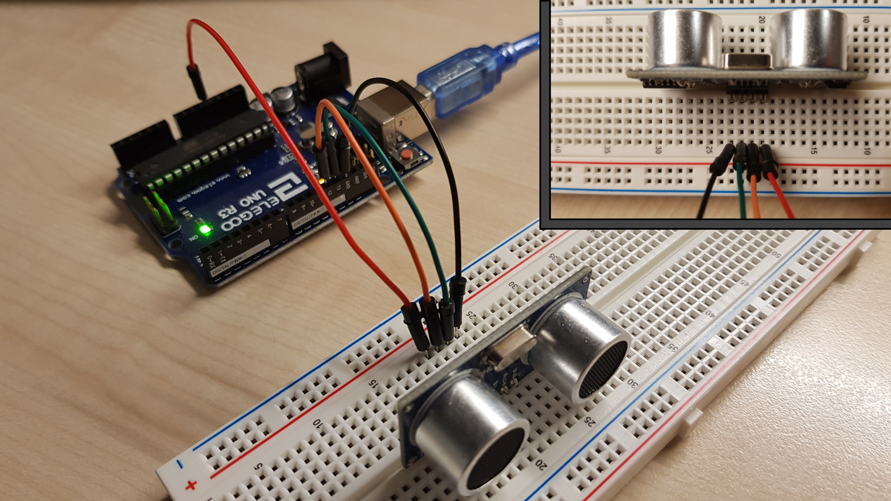

Arduino Labs
Using Arduino
For comparisons between methods in Python and Arduino click 'Code Comparison Explanations' from the top right of the nav bar or click here.
Lab 1 - Arduino IDE Introduction
Summary
Lab 1 is literally just opening the Arduino IDE and plugging in the Arduinio. Don't forget to make sure you have right board and COM port selected from the 'Tools' dropdown menu.
Step-by-step
- Open Arduino IDE
- Open example sketch 'blink' - File -> Examples -> 0.1 Basics -> Blink
Explanation
In the void setup() the pin mode of pin LED_BUILTIN (constant built into Arduino language - is the 'L' LED on the Arduino itself, also connected to digital pin 13) is set to be an OUTPUT.
In the loop we use digitalWrite to set the voltage of the LED_BUILTIN to HIGH. We then use a digitalWrite again with LOW.
Code
// the setup function runs once when you press reset or power the board void setup() { // initialize digital pin LED_BUILTIN as an output. pinMode(LED_BUILTIN, OUTPUT); } // the loop function runs over and over again forever void loop() { digitalWrite(LED_BUILTIN, HIGH); // turn the LED on (HIGH is the voltage level) delay(1000); // wait for a second digitalWrite(LED_BUILTIN, LOW); // turn the LED off by making the voltage LOW delay(1000); // wait for a second }
Lab 2 - Using LED
Summary
Lab 2 extends on Lab 1 by connecting an external LED.
Step-by-step
- Open Arduino IDE
- Open example sketch 'blink' - File -> Examples -> 0.1 Basics -> Blink
- Connect circuit:
- Connect cable from pin 13 to a row on breadboard
- Connect 220Ω or higher resistor from same row as above to another row
- Connect long leg of LED to the row above and the short leg to another row
- Connect cable from short leg to GND on Arduino
- Lab says change both delays to 500 (blinking rate will increase...)
- Lab says change both delays to 5000 (blinking rate will decrease...)
- Lab says user higher value resistor (Larger resistance value = dimmer LED)
Explanation
See lab 1.
Code
Same as Lab 1
Lab 3 - Introducing Serial Monitor and Buzzer
Summary
Lab 3 extends on Lab 2 by controlling the LED with the Serial Monitor, and adding a buzzer.
Step-by-step
- Connect circuit same as Lab 2
- Open Arduino IDE
- Open new sketch and paste template code (to the right)
- Move LED from pin 13 to pin 9
- Run sketch and open serial monitor (icon top right or ctrl + shift + m)
- Sending a 1 should turn LED on
- Sending a 0 (or anything but 1) should turn LED off
- Add a buzzer in the same manor as the LED to pin 6(instead of longer leg, one side marked +)
- Labs says to modify code so buzzer turns on when 't' is sent and turn off when 'd' is sent. (Modify the switch statement - see final code if stuck)
Explanation
Same as Lab 1 apart from instead of LED_BUILTIN, use the led pin constant/variable. Instead of digitalWrite for the buzzer, we use tone and noTone explained here.
Code
Template
Final Code
NOTE I changed int pin to#define... sorry!
Lab 4 - Introducing LDR
Summary
Lab 4 introduces a photoresisior (light dependant resistor (LDR)).
Step-by-step
- Open Arduino IDE
- Connect circuit:
- Connect cable from GND to a row on breadboard
- Connect 10kΩ resistor from same row as above to another row
- Connect either leg of LDR to the row above and other leg to another row
- Connect cable from the leg not connected to resistor to 5V on Arduino
- Connect cable from row with one leg of both the resistor and LDR to an analog in pin (use 0)
- Run sketch and open serial monitor (icon top right or ctrl + shift + m)
- You should see the values decrease when the sensor is covered
- Lab says change the resistor value and describe how this could be used a calibration mechanism
- Lab says modify the code so when LDR reading is below a threshold it should blink 5 times (if statement with a for loop side - see finish code if stuck) - connect LED as in lab 2 to pin 13:
Explanation
In the void setup we beign serial commuincation (explained here). We don't need to use pinMode for the LDR analog in pin as the pin is analog only so it's implied it will be INPUT.
In the void loop we use analogRead to read the value from our LDR pin. We then calculate the voltage (5000 = 5V, 1024 is range of values as the analogRead returns number between 0 and 1023). We then output that to the scree using Serial.print
For the final part we had a if statement to check if the LDR value is below a threshold (I used 50 as that worked for my surrounds when I covered it), if so use a for loop (explained here) to blink the LED 5 times.
Code
Template
Final Code
Lab 5 - Introducing Ultrasonic sensor
Summary
Lab 5 introduces a ultrasonic sensor to detect distance.
Step-by-step
- Place ultrasonic sensor on breadboard across 4 rows
- Connect cable from 5V to V
cc on sensor
If you're using the uni kit, the pinout for your ultrasonic sensor is as follows:
- Connect cable from pin 12 to trig on sensor
- Connect cable from pin 13 to echo on sensor
- Connect cable from an Arduino GND to gnd on sensor 
- Open Arduino IDE
- Open new sketch and paste template code (to the right)
- Run sketch and open serial monitor (icon top right or ctrl + shift + m
- Place flat obect in front of sensor (hand makes it really dodgy)
- As you vary distance of object you should see this reflected in serial monitor
- Labs says to modify code so when object is less than 10cm away LED blinks 5 times (if statement with a for loop side - see finish code if stuck)
Explanation
In the void setup we begin serial commuincation (explained here). We use pinMode to set ECHOPIN and TRIGPIN to INPUT and OUTPUT (trigger is what causes the ultrasonic sensor to send a pulse and echo is what receives the pulse).
In the void loop we use digitalWrite to send a HIGH value to our TRIGPIN, delay for 10 microsends to allow for the ping to come back to the sensor and then use digitalWrite to send a LOW to the TRIGPIN as we don't need it to send out pulses anymore. We then use pulseIn (explained here) to get the time in microsconds for the singal to travel to the object and bounce back, this is stored in a variable called distance - this is an awful name at this moment in time as what it actually stores is the amount of microseconds it took to travel to the object and back. The next line converts it to a distance by dividing by 58 (58 is derived by the fact sound travels at 343m/s which is 29.155 cm/microsecond then divide by 2 as time is for to object and back from object.
For the final part we had a if statement to check if the distance variable is below a 10cm, if so use a for loop (explained here) to blink the LED 5 times.
Code
Template
NOTE I changedECHOPIN and TRIGPIN to 13 and 12 (originally 3 and 2)
Final Code
Lab 6 - Introducing Bluetooth Module
Summary
Lab 6 introduces a bluetooth module allowing for bluetooth control of a LED and buzzer.
Step-by-step
- Connect circuit:
- Place bluetooth modem on breadboard across six rows (first noting the layout of pins)
- Connect cable from Arduino pin 0-RX to row of breadboard with bluetooth pin TX-O
- Connect cable from Arduino pin 1-TX to row of breadboard with bluetooth pin RX-I
- Connect cable from Arduino 3.3v to the row of breadboard with bluetooth pin V
cc - Connect cable from an Arduino GND to the row of breadboard with bluetooth pin GND
- Add a LED to the circuit as shown in lab 2, connecting LED to digital pin 9
- Add a buzzer to the circuit as shown in lab 3, connecting buzzer to digital pin 8
- Open Arduino IDE
- Open new sketch and paste template code (to the right)
- Upload sketch to the Arduino (may have to disconnect the 0-RX and 1-TX pins on the Arduino for the code to upload as bluetooth serial commuincation may interfere with the serial USB cable)
- Plug in USB bluetooth reciever and wait for install
- Add a new bluetooth device via "Bluetooth Devices" (on windows). Will be called RN42-<last 4 digits of MAC address>, eg RN42-5064, pairing code is 1234
- Note the COM port of the bluetooth device by opening the properties of the RN42 modem via "Devices and printers" screen (windows)
- Open Putty (download from here)
- Select 'Serial' as the connect type
- Enter the COM port you noted earlier, i.e COM6
- Enter the speed as defined by your
Serial.begin(<baud_rate>)invoid setup(), 115200 is in the template - Select open. The small "Connect" LED on the bluetooth modem shoud go green after a moment.
- From the new window, enter 1 and LED should light up for 2 seconds (you can't see your input as you're typing from this window)
- From the window, enter anything else and the buzzer should sound for 2 seconds
Explanation
The concepts in this lab are all the same as lab 3, we're just using putty as out serial monitor basically (and this template code uses a if/else statement rather than a switch statement).
Code
Template
There are no changes to the code for this labThis code snippit contains magic numbers for the pin number (should also be a variable/constant for the tone frequency)